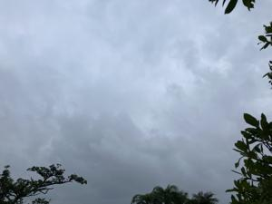
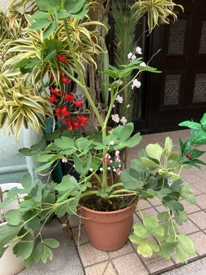
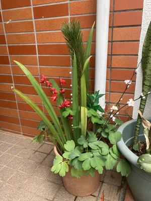

うるがいの話 ある日
最新: 令和８年の門松【うるがいの話 ある日】とは 一日だけのプログです
『うるがいの話』の最新一日だけのプログで、通信料が少なく経済的だ。カニの画像をクリックすると全ての日付が載る『うるがいの話』サイトを表示します
|
|
【うるがいの話】 うるがい(ｳﾙｶﾞｲ urugai)とは、『もずくがに』の名前でとても大きくなります。 |
|---|---|
|
|
【カミマヤーの話】 猫のことを方言でマヤーといいます。カミマヤー（kamimayaa）とは、神の猫のことです。 |
|
【たながぁの音楽】 たながぁ（ﾀﾅｶﾞｰ tanagaa）とは手長えびのことで、何種類かあり大きいのは車 エビぐらいになります。 |

|
【ぶながぁの話】 ぶながぁ(ﾌﾞﾅｶﾞｰ bunagaa)とは、赤い髪の毛、赤い身体、そして身長は１ｍ２０ｃｍ ぐらい、川の蟹を食べているの目撃された。場所は沖縄県国頭郡大宜味村のと ある村僕の隣近所に住んでいる爺さんから、聞いた話です。 |
|
|
【ギーマの話】 ギーマ(giima)とは、山原の里山に咲くスズランに似た、 花を付けます。実は食べられます、 気が付くと口の周りが紫になっています。 |
2026年01月02日 (金）令和８年の門松
16:33

去年いつもはお歳暮と一緒に竹と松を持って来てくれる甥っ子が
来なかった。その代わりに農連市場へ行って、買ってくるのも難
儀だし。ということで、長命草が生えている鉢に、裏庭にあった
竹と、お正月ようにヨメが買った花木の松を利用する。出来たの
が、下の門松である。段々と、手抜きしていく。
 
元旦から、プログラムを作っています。テレビは、ニュース以外
ほとんど見ません。年末から、ネットフリックスで『イカゲーム
』のシリーズをみています、紅白も見ずに。昨日、雨の中、ウォ
ーキングをしていると、道路脇にタイヤ交換をしている人達がい
ました。古くなった軽自動車でおそらく運転手であろう高齢のオ
ジー、近くには頼まれてきた軽トラックの車がありました。タイ
ヤを交換してる人は、元旦そうそう大変である。雨なので歩く人
も少なく、いつもは大勢の参拝者がいる識名宮の人気がありませ
んでした。今日は、多いでしょうが。
コドモのゴマが来ました。ヨメが０才のゴマにお年玉を準備して
いるのをみて、０歳児なのに上げるのと言うと上着などを買って
貰うのと答えた。コドモは、ＮＩＳＡに使うと言った。ヨメは怒
っていた。